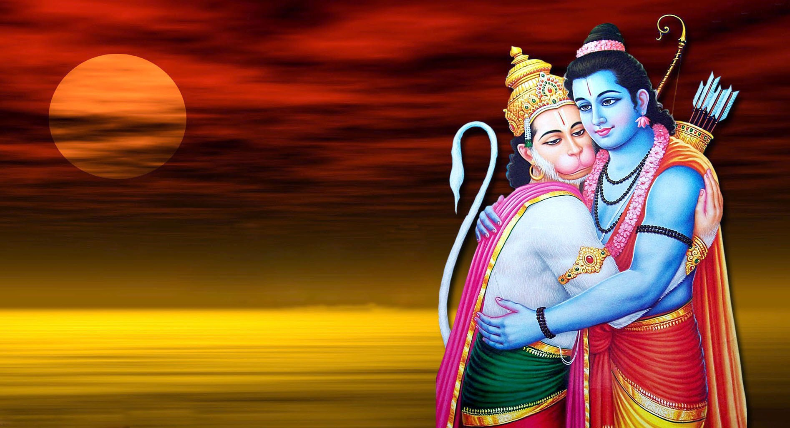
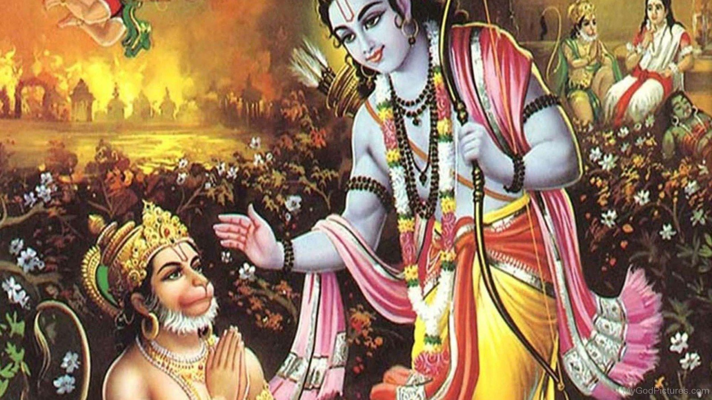

 |
 |
After the ramayan war,lord rama ruled earth for several years and established order and peace. The time came for him to return to his celestial abode 'Vaikunta'.But he knew that hanuman would not let him leave as he was his ardent devotee.So,rama threw his ring into a crack in the floor and asked hanuman to fetch the ring for him.Ever willing to fulfill rama's wishes hanuman transformed himslef into a bee and entered the crack in search of the ring.
That was no ordinary crack.It was a tunnel,which extended down to the deepest trench of paatala,the abode of snakes.Soon hanuman was surrounded by snakes who coiled him and took him to their King Vasuki.Hanuman explained to vasuki that he was in search of a ring.Then,vasuki took him to a place where there was a mountain of rings all identical and all bearing the name of rama.
Hanuman was confused.Which ring should i take to my lord? Vasuki then said to hanuman that whenever Rama's ring will fall it should be understood that the time for rama to depart has come.Hanuman hurriedly grabbed a ring and set out to sarayu river where lord rama and several of his companions including sugriva gathered for their final journey.
Hanuman wanted to join lord rama.But the lord requested hanuman to stay until his name was forgotten by the people.Saying thus he entered the sarayu river and disappeared.Thus,hanuman is said to be one of the five 'Chiranjivis'.